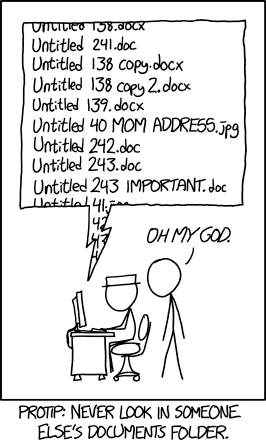
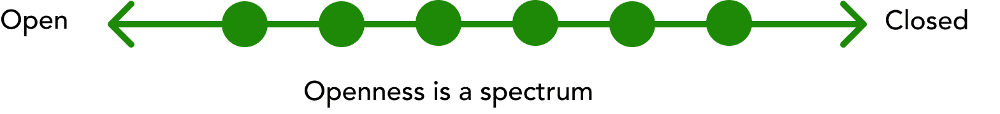

Lesson 3: Making Open Code#
Overview#
In this lesson, you will learn about the practical steps to make code openly accessible. Large volume and well-established software have different needs than an incipient project. For example, a script written to create a simple plot has different requirements than a software package that models the Earth’s climate. The size of a research team can also determine the steps required to make code open access. This lesson covers the process to make code usable to other researchers through documentation, considerations around licenses, and software development best practices.
Learning Objectives#
After completing this lesson, you should be able to:
Describe the key considerations when planning a new open software project.
List three reasons for projects to use version control.
Explain the purpose and recall general information typically included in a README file.
Be able to select a license for your code and list the differences between permissive and protective open-source software licenses.
Explain best practices in software development that support transparency, inclusion, and reproducibility.
How do We Plan for Making Code?#
Code is written to solve a challenge. This can range from producing a plot, to data processing Earth observations, to modeling the Universe. The challenges associated with writing code can range in difficulty, from simpler tasks such as the use of spreadsheets to more complex activities such as the creation of extensive libraries and use of high performance or cloud computing. Code can be developed as an individual, team, or a community. Once written, code might be used for decades or never again.
When starting a research project, it is useful to answer the following questions:
What problem am I trying to solve, and are others in my community facing it as well?
Are there existing solutions? (In Lesson 2, we explored how to look for existing solutions.)
Did you find code that was close to what you want but didn’t quite meet your needs?
You could potentially contribute to it instead of writing something new.
Even if a solution already exists, there might be good reasons to develop your own code. Instances include:
The code is written in a different programming language than you are familiar with.
The license is not open enough to adopt it.
To try new techniques or to develop a deeper understanding of the problem.

It might take more time to start a new project, or it might take more time to integrate someone else’s code than writing your own. You will have to make that call.
We looked for existing code, and though we found a few things that were close we decided in the end our needs were unique enough - we’re starting a new project!
Starting a New Project#
When starting a new project, the key things to consider are:
Define the project scope, its primary features and any limitations, and the intended audience.
Consider resources required for the software to run. Will it be on a personal computer, a high-performance computing server, or on the cloud?
How will it be managed?
This lesson focuses predominantly on the question of how to manage open access code.
Who will be working on the project? What are some of the development best practices? How will you share it openly? How will it be licensed?
Organizing a Project#
Source: https://xkcd.com/1459/
Software projects can be organized in a variety ways, each that involve unique considerations about how to begin. Many projects start out as a single script that was only intended for a single use. However, a script can grow into a much larger project with unforeseen applications in its original or new field of research. Other projects can start with formal requirements and standards.
Making code public has many advantages:
It enables open collaboration.
It invites constructive feedback that contributes to a code’s accuracy and robustness.
People with less experience with the subject matter will learn more.
Those with less programming experience can learn from those with more programming experience as they improve the code.
It provides an intermediate product that can still be cited.
When naming a project, conduct a quick search of the envisioned name to see what shows up. Avoid names with many other uses as this will make it difficult for others to discover the code. Also, do not choose embarrassing or trademarked names.
Hosting the product on a version control platform ensures the permanence of your project. If code only exists on your computer, it may disappear if the computer is damaged or is lost.
Documenting the production and management of your code benefits both you and those that might use your code in the future. You are your own best collaborator. Documentation can save you from a headache should you reuse the code in six months or attempt to recall meticulous details about your process later on.
Questions to consider when choosing a programming language:
Will potential collaborators be able to contribute in the chosen language?
Which languages are you most experienced with?
Are there any limitations from your computing environment that would impede your ability to write or manage this code?
Languages have strengths and weaknesses; which are most important for your project?
Before someone else can use your code, they’re going to ask some questions:
Where can I find your code?
Is your code documented?
In what ways am I allowed to use your code?
Will you accept changes to your code? If I find a bug, what do I do?
How do I trust your code works?
How do I know if the code will be supported long-term?
Importance of Version Control#
Your code will change significantly over the lifetime of your project. Just as we appreciate the ability to track earlier versions of documents or versions created by different people, inevitably someone will want to be able to revert, compare, and synthesize changes in code.
The most popular tool for version control is git. Git is a system that tracks changes in computer files, similar to Google Docs or SharePoint but more applicable to code script. Git is usually used in conjunction with a version control platform such as GitHub, GitLab, or Bitbucket. These tools were covered in Module 2.2.
Version control enables the following:
Helps developers keep track of changes to a project’s code (as well as supplemental files and documentation) over the entire course of a project’s evolution.
Revisions to a project’s files can be tracked, including contributions made by different people.
Undesirable changes (like errors or bugs) can be reverted at any time.
Version control is a good practice for coding, even if you are not immediately sharing the code. You can use version control with your code privately on your computer, or use the private mode on hosting services (e.g., GitHub and GitLab). By setting up version control early on, you prepare your code for intended and unforeseen future use.
Further Resources on version control
Describing Our Code to Others#
README#
The first stop for a user when they approach a new project should be the README file. Aptly named, this file contains orientation information that will help a user understand a project’s purpose, provides examples of how it can be used, and lists other important information that the creator deems pertinent.
At the minimum, a README should contain the name of the project and a very short paragraph of what the software is. Two to three sentences in a plain-language style that does not assume who is reading it. It’s the elevator pitch for the project.
Bad README example |
“This code recomputes the fundamental permutation factor of the downward flow (for J < 10, obviously).” |
Good README example |
“LeapKitten. This Python software package takes any picture of a kitten (JPEG, PNG) and uses artificial intelligence to output what it would look like leaping into the air. In addition, the code takes leap years into account on the timestamp on the image.” |
In addition, the following information is helpful to add to the README, especially if they are not listed elsewhere:
A list of any code dependencies the software has, e.g. “Numpy, kitten-rng, and human-readable must be installed to run this software.”
How to install and a brief description of how to run the software.
Detailed description of the software, especially if there is no external documentation.
Examples of how to use the software.
Acknowledgement of team members or sources of support.
As seen in these examples, README files can be useful for a collection of scripts supporting a publication or an extensively developed software package.
Contributor Guidelines#
The CONTRIBUTING.md file gives information about how to contribute to the project. It details how the contribution process works and what type of contributions are needed. While not every project has a CONTRIBUTING.md file, the existence of one is a clear indicator that contributions are welcomed.
You’ll need to decide for yourself when your project has progressed enough to consider inviting contributors. When it has, create a document called CONTRIBUTING at the top level of your report.
The Astropy contributing guidelines and Numpy contributing guidelines provide two examples.
Bonus Tip: Even if you are developing your code publicly, this does not mean you have to accept contributions from others or maintain your code forever. The contributing guidelines or README are good places to indicate what your expectations are for your code. This can clarify that the code is not maintained or not accepting contributions.
Code of Conduct#
The code of conduct sets ground rules for participants’ behavior and helps to facilitate a friendly, welcoming environment. While not every project has a CODE_OF_CONDUCT file, its presence signals that this is a welcoming project to contribute to.
Code Documentation#
Code Level Documentation for the Developer
Your software should be documented within the source code. Each function should have comments at the start that briefly state, in plain language, what the function is for. This is not only for other developers, but yourself a week later when you forgot what you wrote.
Example
# This function takes the image array and crops it from the center to 50% of the original size.
Without going into details of the data type, calling parameters, etc. this description immediately puts someone looking at the code into the context of what the function aims to accomplish; they can then explore the details.
While you should consider placing a description at the start of a function, use your discretion on where you put similar descriptions of code. At the start of a complex loop or analysis would be a good idea. Don’t go overboard - things like this aren’t useful:
# set x to 17
x = 17
Descriptive variable, class, and function names can make your code very readable. Sometimes even great coders are working fast and will name variables ‘a’, ‘temp’, or other names that probably won’t make a lot of sense in a week or two when they come back to something they were working on. Names like ‘baking_time’ or ‘velocity’ are more clear. Variable names should be easy to understand and clearly represent what they are.
Ideally, someone who doesn’t write in the software language of the code can read the comments in the file and have a rough idea of what is happening.
Use the comments to put URLs that reference where you might have found the algorithm you’re using (e.g. Stack Overflow) or the journal paper where you found the formula you’re implementing.
Code Level Documentation for the User#
If you are developing code that you expect others to use, produce a manual on how to use the code. As code constantly develops, it is much easier to document while or even before you write any code.
If you write your documentation within the code itself, there are pieces of software that can then extract it, format it, and present it as a polished manual. Examples of documentation generated from the code can be seen for Astropy or NumPy.
They look fancy, but very similar too. These sites were completely generated from comments and documents written in the source code. Different from the comments written for developers of the code above, these comments were written specifically for the audience of external users of the code: the manual.
While there are multiple software packages for automatic documentation generation, the most commonly used ones are Sphinx for Python and Doxygen for most everything else. Markdown is also a popular choice for the formatting language for documentation.
Programming and Documenting#
Establishing a Development Environment - Establishing an appropriate development environment will help you write good, clean code and will help you maintain the project as it evolves.
Configure any necessary tools for writing the code. Perhaps an IDE (Integrated Development Environment) or text editor. Some popular examples include VS Code, Pycharm, R Studio, Xcode.
Set up a package manager. For example, for Python, one could use ‘anaconda’ or ‘poetry’.
Create a virtual environment specific to your project to isolate its dependencies (and their versions) from those used for other projects
Structuring Files and Folders - How you structure the files in your project from the beginning will contribute to the success of the final results.
Different programming languages have different standard folder structures. Familiarize yourself with the standards before starting as it will help others collaborate and will likely save you from difficulties later.
There are a variety of sample code structures that can be used to get started. For example, for Python there is Cookiecutter and an Astropy package template.
What License Should We Choose for Our Code?#
Licensing Considerations when Using Open Software#

Open-source software licenses are the basis for how scientists use, make, and share code and software. Understanding some of the nuances of these licenses is important because it will affect how your project can license and share code.
A software license is a legal document that states the rights of the developer and user of a piece of software.
An open source license is a type of software license, approved by the Open Source Initiative (OSI) as compliant with the Open Source Definition. An open source license grants permissions for anyone to inspect, use, modify, and distribute the software’s source code for any purpose.
Licenses ensure that developers receive credit and control over how their work is used. Without a license, software is assumed copyrighted and without permissions. Programmers include licenses to allow reuse.
Licenses take various forms in order to outline:
Contractual obligations (if any exist) between the developer and user.
What the user may do with the software.
To whom the user may distribute the software (if any such right exists).
Length of time the user has the right to use the software.
Some Common Types of Software License#
Click ‘+’ to travel more information.
Public Domain
Anyone free to use.
Lesser General Domain
Can link to open source libraries, and code can be licensed under any license type.
Permissive
Gives users wide but not complete latitude to reuse/relicense.
Non-permissive
Allows users to reuse, but also gives users the responsibility to share their changes with the community.
Copyleft
Can be distributed or modified if all the code involved is licensed under the same license.
Proprietary
Cannot be copied, modified, or distributed.
Before you choose a license, first check with your organization or employer. They may have specific guidelines about what software license you are allowed to use. Your research grant may also stipulate permissible license types. The software management plan should specify what license you plan to use.
If a license is not shared with a code, a creative work is assumed to be copyrighted by default in the United States. It does not need to be registered, and it is assumed to be automatically protected by copyright the moment it is created.
For software, the license is shared in a file called LICENSE at the top of the repository. It’s a standard location people will know to look at. It’s not bad practice to put a one line version of the license at the top of each file of code as well, with a pointer to where one could find the full license.
Types of Open-Source Software Licenses#
There are two main types of open-source licenses. Permissive and protective (sometimes referred to as copy-left). The difference in these types of licenses is primarily related to the type of license users of the code are allowed to apply to their derivative works.
| PERMISSIVE LICENSE ☑ | PROTECTIVE LICENSE |
|---|---|
|
The Open Source Initiative defines a permissive software license as a license that guarantees the freedoms to use, modify, redistribute, and create derivative works. An example of this type of license is the Apache 2.0 license by the Apache Software Foundation. It is the most popular and widely used permissive license. Users have wide latitude for reuse under this license. They are generally free to incorporate the code into their project or use it how they wish. A user of permissive-license open source in a product could redeploy the open source software with a wide range of licenses, including proprietary closed source software. |
|
| PERMISSIVE LICENSE | PROTECTIVE LICENSE ☑ |
|---|---|
|
Protective (copyleft) licenses are a legal technique of granting certain freedoms over copies of copyrighted works with the requirement that the same rights be preserved in derivative works. This allows users to reuse, but also requires users to share their changes with the community using the same license. An example of a protective license is the General Public License (GPL) that ensures users have the freedom and responsibility to share their changes with the community. It is the most widely used protective license. These types of licenses can result in less re-use by users who may prefer or be required to only use permissive licenses. |
|
Common Licenses for Open Software#
Some of the most popular licenses used in open software are:
| PERMISSIVE (CAN APPLY ANY LICENSE TO DERIVATIVE WORKS) ☑ | PROTECTIVE/ COPYLEFT (ALL DERIVATIVE WORKS MUST DISTRIBUTE ALL ITS SOURCE CODE UNDER THE SAME LICENSE) |
|---|---|
| PERMISSIVE (CAN APPLY ANY LICENSE TO DERIVATIVE WORKS) | PROTECTIVE/ COPYLEFT (ALL DERIVATIVE WORKS MUST DISTRIBUTE ALL ITS SOURCE CODE UNDER THE SAME LICENSE) ☑ |
|---|---|
For more information on different types of licenses please refer to the Open Source Initiative OSI.
Activity 3.1: Licenses#
In this activity, you are asked to answer whether the following statements are true or false.
Statement 1:
A software license states the rights of the developer and user for a piece of software.
True
False
Statement 2:
Without a license, software is assumed copyrighted and without permission.
True
False
Statement 3:
Anyone is free to use software with a “permissive” license without restriction.
True
False
Statement 4:
Users are not allowed to copy and modify any software with a copyleft license.
True
False
Programming Best Practices#
In this section, some best practices in development are provided including on code review, testing, security, and accessibility. These best practices will improve the quality of code, reproducibility of results, and security of a project. Combined, these actions help improve the robustness of open access code and help to meet the unique challenges that can arise with multiple contributors and revisions that occur over an extended period of time.
Code Review#
Code benefits from peer review in the same way as science. Having someone else read over your code and test it is one of the best ways to improve the quality of the code.
Many version control platforms have built-in tools that enable developers to review, comment, and iterate on each other’s code. These can be done in the open and allow anyone to comment.
Here is a great example of the discussion that can happen when the original creator of an algorithm comments on a python implementation made by a first-time contributor to the Astropy project. The open and constructive discussion led to a better implementation of the algorithm along with possible future improvements.
Software packages can be reviewed as their own products as well. Many scientific publications now accept papers focused on software. There are entities like PyOpenSci and the Journal of Open Source Software that provide open peer review of scientific packages. See more details about JOSS in the next lesson on sharing your code.
Testing#
A proven method to evaluate the reproducibility of your software is through testing. There are many types of testing that range from testing the smallest testable parts of a code to verifying if a code works as whole under different scenarios. Code testing can include a wide range of different techniques. The following lesson section provides only a brief introduction to the topic.
The main objective of code testing is to evaluate if a code does what its authors intended it to do. Comprehensively testing code can be very difficult as it involves testing the code for generating expected outputs as well as for failing when it should.
| SCIENTIFIC VALIDATION ☑ | REPRODUCIBILITY TESTING | BUILT IN TESTS | AUTOMATED TESTING |
|---|---|---|---|
|
Whether producing a script or an entire data processing pipeline, the validation of software is critical to ensuring the quality and trustworthiness of the scientific results. This could mean manually calculating the results to check the output of the code or comparing to previously produced results or having another team member test it. |
|||
| SCIENTIFIC VALIDATION | REPRODUCIBILITY TESTING ☑ | BUILT IN TESTS | AUTOMATED TESTING |
|---|---|---|---|
|
Given the same inputs and parameters, can the same results be produced? Making the configuration files, input data, etc. openly available so users can easily run and produce the same published results is a critical way to increase trust in your code. |
|||
| SCIENTIFIC VALIDATION | REPRODUCIBILITY TESTING | BUILT IN TESTS ☑ | AUTOMATED TESTING |
|---|---|---|---|
|
Unit tests enable software developers to bolster their confidence in their code’s ability to perform as expected. Unit tests are small functions that sit outside the code base that test a specific function or run a specific test. For example, if a function takes an image and flips it horizontally, one test might check that the resulting image is the same size. Another compares the output using a known image with the expected result. Another checks that a new image is returned. |
|||
| SCIENTIFIC VALIDATION | REPRODUCIBILITY TESTING | BUILT IN TESTS | AUTOMATED TESTING ☑ |
|---|---|---|---|
|
Built-in tests can usually be run both manually and automatically. Most version control platforms offer services for running tests automatically. When run this way, code can be checked to see if changes raise any problems. This process of checking the code automatically as it is developed is called continuous development or continuous integration (CI/CD). If a small change made in one part of the code results in an unexpected change in another part, running the tests will uncover this immediately. |
|||
Minimizing the Risk of Security Vulnerabilities#
Whether using open source, closed source, or commercial software, it is important to consider the security risks inherent in the development of software.
Ensure minimal, DRY (Don’t repeat yourself) code (easier to maintain and fix).
Use global variables or key managers for credentials. Never include credentials in your code.
Use well-tested and maintained dependencies. In packages that you maintain, keep the list of dependencies up to date.
Create software with tools that provide automated scanning and auditing.
If there are unsupported dependencies that you rely on, assess them to determine how they might introduce security risks and whether it would be appropriate to switch to a different package.
| SECURITY TOOLS AND SECURITY VULNERABILITIES ☑ | TEST COMPONENTS AND DEPENDENCIES |
|---|---|
|
Commercial and open-source tools have been developed to address the challenge of identifying the security vulnerabilities in different source components. If you do not have any technology to secure your open source usage, you can consider using the Dependabot or OWASP dependency check tools. The Open Web Application Security Project (OWASP), is an online community that produces free tools and technologies in the field of web application security. OWASP dependency check is a utility created for developers, which identifies project dependencies and checks if they contain any known, publicly disclosed, open-source vulnerabilities. |
|
| SECURITY TOOLS AND SECURITY VULNERABILITIES | TEST COMPONENTS AND DEPENDENCIES ☑ |
|---|---|
|
Testing the security of the open-source components you are using is the best way to ensure the safety of your applications and your organization. Your commitment to timely and frequent analysis of open-source components should be the same as to your proprietary code. This is especially true as the component in question may have unknown security vulnerabilities or dependencies that differ with each use case. It is possible for a component to be secure in a particular application but vulnerable in another. |
|
Creating FAIR Software#
| FINDABLE ☑ | ACCESSIBLE | INTEROPERABLE | REUSABLE |
|---|---|---|---|
|
Software includes a persistent and unique identifier and rich metadata, so it is easy for humans and machines to find. |
|||
| FINDABLE | ACCESSIBLE ☑ | INTEROPERABLE | REUSABLE |
|---|---|---|---|
|
Software is retrievable from its identifier via standard communication protocols. |
|||
| FINDABLE | ACCESSIBLE | INTEROPERABLE ☑ | REUSABLE |
|---|---|---|---|
|
Software interoperates with other software; it exchanges data and/or metadata via community standards. |
|||
| FINDABLE | ACCESSIBLE | INTEROPERABLE | REUSABLE ☑ |
|---|---|---|---|
|
Fully described metadata with provenance, meeting community standards. License permits reuse. |
|||
Additional Helpful Tips#
Here are some further suggestions on how to make your code more accessible, reproducible, and transparent:
Descriptive Names |
Variables, functions, and similar entities should be given descriptive names as opposed to vague names. Descriptive names instantly give other programmers an idea of what the variable or function is. For example, the variable name colourOfCat is a good name because it describes what it intends to do, which is to encompass the color of a cat. |
Metadata File |
Consider including a metadata file for your software to make it more discoverable. A ‘codemeta.json’ can be created using Code Meta’s generator to include with your package. |
Operation Documentation |
Share details about how you are running the code. For example, document the version of a software library you are using, or the version of the compiler. These are often shared in an ‘environment.yml’ file. |
Automation |
Consider the following scenario: |
Using Standards |
Most languages have their own coding style adopted by their respective communities. Following those conventions makes it easier for others to contribute to your code and makes your project more inclusive. |
Portability |
Allows individuals the ability to transfer their personal data between platforms. |
Naming |
Many historical terms used in software have negative connotations depending on the context. When considering different terms or naming, consider how different audiences may react to those terms. |
Lesson 3: Summary#
In this lesson, you learned:
Planning a new project requires programmers to have a clearly defined purpose, recognize any resource limitations, and envision a data management plan.
Using a repository with version control allows developers to track changes across time and from multiple contributors, which can help with troubleshooting for errors and with managing a team of programers.
A README file should include the name of a project and short but clear description of the software.
Licenses ensure that developers receive credit and control over how their work is used. Without a license, software is assumed copyrighted and without permissions
Testing, labeling, and implementing security measures are examples of programming best practices that support Open Science.
In addition to learning how to Share your Code in the next lesson, you will also have some opportunities to put this lesson into practice.
Lesson 3: Knowledge Check#
Answer the following questions to test what you have learned so far.
Question
01/05
Which of the following should be considered when planning an open software project? Select all that apply.
The intended user audience.
What protocol will be used to sync changes between individual contributors and the central repository.
The programming language to be used.
Who will financially benefit from sales of the software.
Question
02/05
Which of the following is a benefit of using a version control system in your software?
New changes are automatically tracked.
Different contributors can add or edit code at the same time.
Undesirable changes can be quickly reverted.
All of the above.
Question
03/05
Select two items that are good to include in a README file from the list below:
Installation/compilation instructions
Code development history
The most important portions of the code
Usage instructions and example output
Question
04/05
Which of the following licenses allows users to reuse, but also requires users to share their changes with the community using the same license?
Public Domain
Lesser general domain
Permissive
Protective License
Commercial
Question
05/05
Which of the following practices makes your project more inclusive?
Including a Code of Conduct.
Referencing historical events in the name of your project.
Following standards for the programming language being used.
Developing the project privately.
Including a Guideline for Contributors.